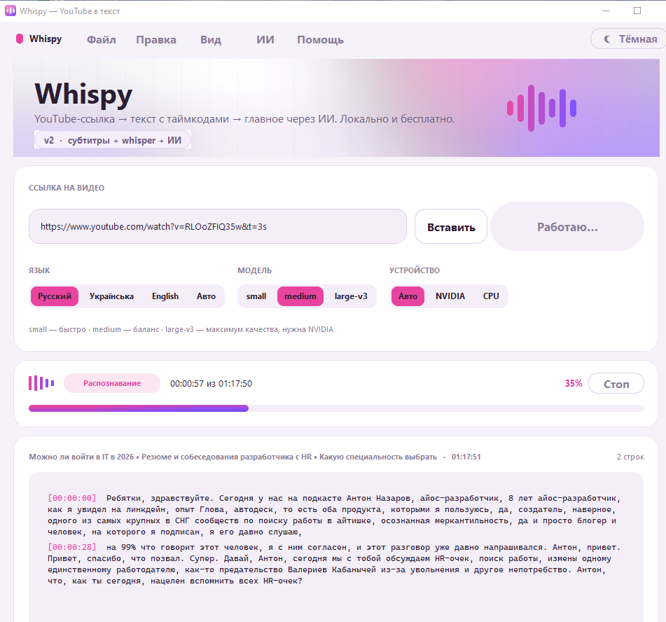
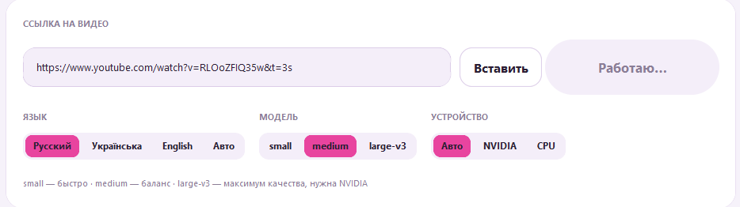
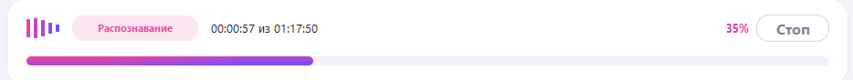
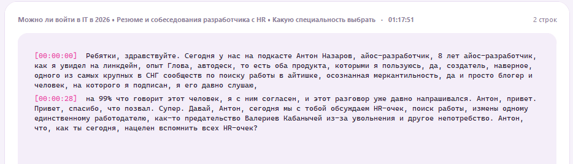
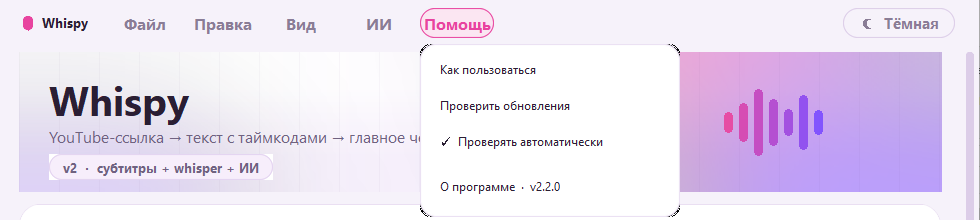

Whispy — руководство
YouTube-ссылка → текст с таймкодами и спикерами → главное через ИИ. Всё по шагам, с картинками. Версия 2.3.
Первый запуск
Установи и открой программу
Запусти Whispy-Setup-x.x.x.exe. Если Windows покажет синее окно SmartScreen — нажми Подробнее → Выполнить в любом случае (программа без цифровой подписи, это нормально). Ярлык появится на рабочем столе и в Пуске.

Главное окно: сверху меню, затем шапка, карточка ссылки, прогресс и текст.
Дай программе докачать модель
При первом запуске Whispy сама скачивает модель распознавания medium (≈1,5 ГБ) в фоне — под полосой прогресса видно процент. Пока качается, можно работать с видео, у которых есть субтитры: они обрабатываются без модели за секунды. Если хочешь запустить загрузку вручную: Помощь → Скачать модель заранее.
Получить текст из видео
Вставь ссылку
Скопируй адрес видео в браузере, нажми в поле и Ctrl+V (работает в русской раскладке тоже) — или кнопку Вставить. Главная кнопка — ▶ Получить текст.

Поле ссылки, кнопка «Вставить», главная кнопка и переключатели настроек.
Нажми «Получить текст ✦»
Сначала программа ищет готовые субтитры YouTube — если они есть, текст появится за секунды. Если нет — скачивает аудио и распознаёт сама. Этап и проценты видны в карточке прогресса, справа — кнопка Стоп.

Статус «Распознавание», сколько уже готово из общей длины, примерно сколько осталось.
Читай текст по мере появления
Строки приходят вживую, с розовыми таймкодами [чч:мм:сс]. Файл .txt сохраняется автоматически — путь показан внизу, кнопки Копировать всё, Открыть файл, Показать в папке.

Так выглядит готовый транскрипт часового подкаста.
Настройки
| Переключатель | Что делает | Совет |
|---|---|---|
| Язык | Язык речи в видео. «Авто» — определяется сам. | Для русских видео оставь «Русский» — так точнее и быстрее. |
| Модель | small — быстро, medium — баланс, large-v3 — максимум качества. | medium по умолчанию. large-v3 без видеокарты NVIDIA будет считать часами. |
| Устройство | Авто / NVIDIA / CPU. | Оставь «Авто». Если есть NVIDIA — см. раздел ниже. |
| Режим | «Быстро» — в 2–3 раза быстрее, «Точно» — чуть аккуратнее. | Для подкастов и лекций хватает «Быстро». |
| Спикеры | Выкл / Авто / 2 / 3 / 4 — определяет, кто говорит. | Если знаешь, сколько человек в разговоре — поставь число, так точнее. |
Спикеры — кто говорит
Включи «Спикеры» до запуска
Программа скачает один раз маленькую модель голосов (28 МБ), после распознавания сравнит голос в каждой реплике и подпишет строки: Спикер 1, Спикер 2… — каждый своим цветом. В файле строки выглядят так: [00:12:30] Спикер 2: текст.
Работает и когда текст взят из субтитров YouTube — тогда аудио скачивается только ради голосов.
Мои файлы
Кнопка «Мои файлы» (с иконкой папки) сверху справа
Откроется список всего, что сохранила программа: транскрипты (.txt) и результаты ИИ (.html). Для каждого — Открыть, В папке (покажет файл в проводнике), для текста — Копировать. Сами файлы лежат в Документы → Whispy.
ИИ-ассистент — главное из видео
Выбери формат
Тезисы — карточки с главными мыслями и цитатами. Таблица — раздел / тезис / почему важно / таймкод. Блок-схема — логика процесса в виде диаграммы. Презентация — 10–12 слайдов, листаются стрелками. Инфографика — одна страница с цифрами и карточками.
Нажми «Сделать через API»
Через 30–90 секунд в браузере откроется готовая интерактивная страница в стиле Whispy. Она сохраняется в «Мои файлы»; кнопка Сохранить в PDF внизу страницы. Слайды переключаются стрелками клавиатуры.
При первом нажатии программа попросит API-ключ — вставь тот, что тебе дали (вид sk-ant-…). Он сохраняется один раз, менять — кнопка API-ключ с иконкой ключа рядом.
Без API — через чат Claude
Нажми Скопировать промпт + текст, затем Открыть Claude, вставь Ctrl+V и отправь. Claude сделает тот же формат прямо в чате.
Видеокарта NVIDIA (ускорение в 5–10 раз)
Помощь → Установить поддержку NVIDIA

Меню Помощь в светлой теме.
Программа скачает библиотеки CUDA (~1 ГБ) и попросит перезапуститься. Нужен установленный драйвер NVIDIA (GeForce Experience или сайт NVIDIA). После перезапуска поставь устройство «NVIDIA» или «Авто» — распознавание пойдёт на видеокарте, и можно выбирать large-v3.
Обновления
Всё само
При запуске программа проверяет новую версию. Если есть — покажет, что нового, и кнопку Обновить: скачает, тихо поставит и перезапустится. Вручную — Помощь → Проверить обновления.
Если что-то не так
| Сообщение / ситуация | Что делать |
|---|---|
| «YouTube попросил подтвердить, что вы не бот» | Подожди 10–15 минут и повтори. Если часто — установи обновление программы. |
| «Видео недоступно» / «приватное» | Проверь, открывается ли ссылка в браузере без входа в аккаунт. |
| «Мало места на диске» | Освободи место (модель medium ≈1,5 ГБ) или выбери small. |
| Долго распознаёт | Режим «Быстро», модель small, или поставь поддержку NVIDIA. Часовой подкаст на CPU в режиме «Быстро» — примерно 10–20 минут. |
| Спикеры определились неверно | Поставь точное число спикеров вместо «Авто» и запусти снова. |
| Окно «зависло» | Нажми Esc — возможно, открыт диалог. Если не помогло — кнопка «Стоп» всегда освобождает интерфейс. |